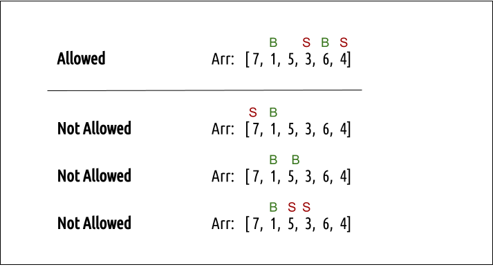
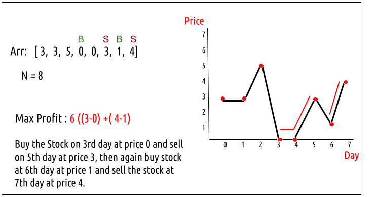
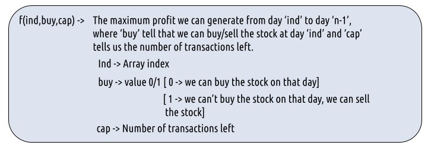
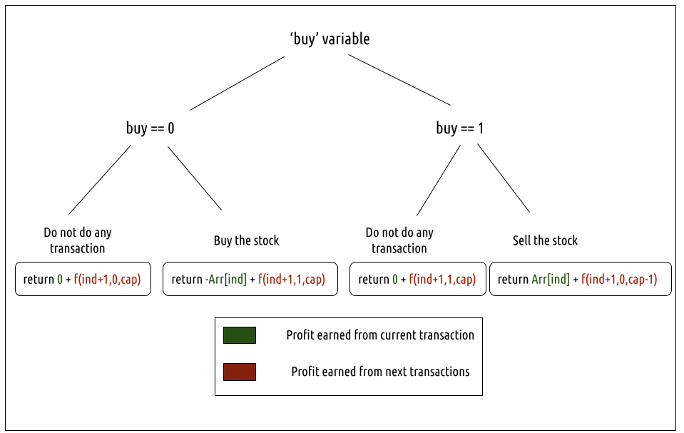
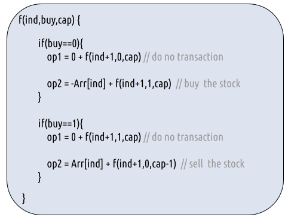
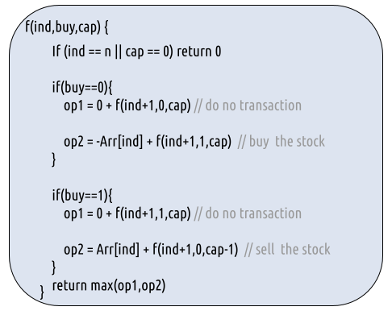
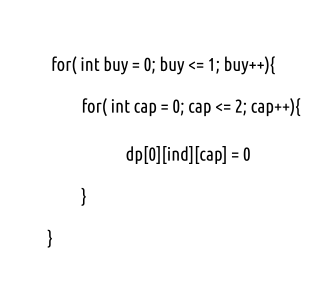
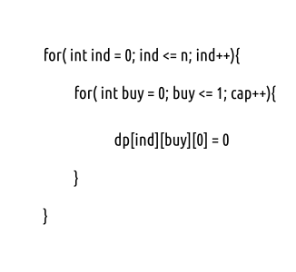
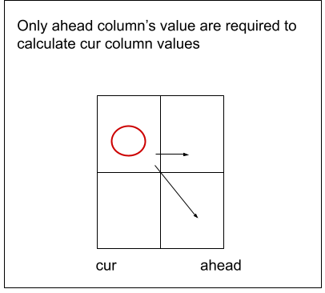

Problem Link: Best Time to Buy and Sell Stock III
We are given an array Arr[] of length n. It represents the price of a stock on ‘n’ days. The following guidelines need to be followed:
- We can buy and sell the stock any number of times.
- In order to sell the stock, we need to first buy it on the same or any previous day.
- We can’t buy a stock again after buying it once. In other words, we first buy a stock and then sell it. After selling we can buy and sell again. But we can’t sell before buying and can’t buy before selling any previously bought stock.
- We can do at most 2 transactions.

Examples


Disclaimer: Don’t jump directly to the solution, try it out yourself first.
Memoization Approach
Algorithm / Intuition
Every day, we will have two choices, either to do nothing and move to the next day or to buy/sell (based on the last transaction and the number of transactions left) and find out the profit. Therefore we need to generate all the choices in order to compare the profit. As we need to try out all the possible choices, we will use recursion.
Steps to form the recursive solution:
We will first form the recursive solution by the three points mentioned in the Dynamic Programming Introduction.
Step 1: Express the problem in terms of indexes.
We need to think in the terms of the number of days, therefore one variable will be the array index( say ind). Next, we need to respect the condition that we can’t buy a stock again, that is we need to first sell a stock, and then we can buy that again. Therefore we need a second variable ‘buy’ which tells us on a particular day whether we can buy or sell the stock. Next, we have a cap on the number of transactions that we can make. Here the initial cap is 2. We need to always keep in mind this constraint. We can generalize the function as :

Step 2: Try out all possible choices at a given index.
Every day, we have two choices:
- To either buy/sell the stock(based on the buy variable’s value and if ‘cap’ > 0).
- To do nothing and move on to the next day.
We need to generate all the choices. We will use the pick/non-pick technique as discussed in this video “Recursion on Subsequences”.
Case 1: When buy == 0, we can buy the stock.
If we can buy the stock on a particular day, we have two options:
- Option 1: To do no transaction and move to the next day. In this case, the net profit earned will be 0 from the current transaction, and to calculate the maximum profit starting from the next day, we will recursively call f(ind+1,0, cap). As we have not bought the stock, the ‘buy’ variable value will still remain 0, indicating that we can buy the stock the next day. And the ‘cap’ variable will remain the same as if no transaction took place.
- Option 2: The other option is to buy the stock on the current day. In this case, the net profit earned from the current transaction will be -Arr[i]. As we are buying the stock, we are giving money out of our pocket, therefore the profit we earn is negative. To calculate the maximum profit starting from the next day, we will recursively call f(ind+1,1, cap). As we have bought the stock, the ‘buy’ variable value will change to 1, indicating that we can’t buy and only sell the stock the next day. As we have only bought the stock and not sold it the transaction remains incomplete and the ‘cap’ variable value remains unchanged.
Case 2: When buy == 1, we can sell the stock.
If we can buy the stock on a particular day, we have two options:
- Option 1: To do no transaction and move to the next day. In this case, the net profit earned will be 0 from the current transaction, and to calculate the maximum profit starting from the next day, we will recursively call f(ind+1,1, cap). As we have not bought the stock, the ‘buy’ variable value will still remain at 1, indicating that we can’t buy and only sell the stock the next day. And the ‘cap’ variable will remain the same as if no transaction took place.
- Option 2: The other option is to sell the stock on the current day. In this case, the net profit earned from the current transaction will be +Arr[i]. As we are selling the stock, we are putting the money into our pocket, therefore the profit we earn is positive. To calculate the maximum profit starting from the next day, we will recursively call f(ind+1,0,cap-1). As we have sold the stock, the ‘buy’ variable value will change to 0, indicating that we can buy the stock the next day. As we have sold the earlier bought stock, we make one complete transaction, therefore now we update the ‘cap’ variable’s value to cap-1.
Note: Buying and selling a stock together counts as one complete transaction.
The figure below gives us the summary:


Step 3: Return the maximum
As we are looking to maximize the profit earned, we will return the maximum value in both cases.
Base Cases:
- If ind==n, it means we have finished trading on all days, and there is no more money that we can get, therefore we simply return 0.
- If cap==0, it means that we cannot make any more transactions. Therefore we return 0.
The final pseudocode after steps 1, 2, and 3:

Steps to memoize a recursive solution:
If we draw the recursion tree, we will see that there are overlapping subproblems. In order to convert a recursive solution the following steps will be taken:
- Create a dp array of size [n][2][3]. The size of the input array is ‘n’, so the index will always lie between ‘0’ and ‘n-1’. The ‘buy’ variable can take only two values: 0 and 1 and the ‘cap’ variable can only take three variables 0, 1, and 2. Therefore we take the dp array as dp[n][2][3].
- We initialize the dp array to -1.
- Whenever we want to find the answer of particular parameters (say f(ind,buy,cap)), we first check whether the answer is already calculated using the dp array(i.e dp[ind][buy][cap]!= -1 ). If yes, simply return the value from the dp array.
- If not, then we are finding the answer for the given value for the first time, we will use the recursive relation as usual but before returning from the function, we will set dp[ind][buy][cap] to the solution we get.
Code
#include <bits/stdc++.h>
using namespace std;
int getAns(vector<int>& Arr, int n, int ind, int buy, int cap, vector<vector<vector<int>>>& dp) {
// Base case: If we reach the end of the array or run out of allowed transactions, return 0.
if (ind == n || cap == 0)
return 0;
// If the result is already calculated, return it.
if (dp[ind][buy][cap] != -1)
return dp[ind][buy][cap];
int profit;
if (buy == 0) { // We can buy the stock
profit = max(0 + getAns(Arr, n, ind + 1, 0, cap, dp),
-Arr[ind] + getAns(Arr, n, ind + 1, 1, cap, dp));
}
if (buy == 1) { // We can sell the stock
profit = max(0 + getAns(Arr, n, ind + 1, 1, cap, dp),
Arr[ind] + getAns(Arr, n, ind + 1, 0, cap - 1, dp));
}
// Store and return the calculated profit.
return dp[ind][buy][cap] = profit;
}
int maxProfit(vector<int>& prices, int n) {
// Creating a 3D DP array of size [n][2][3]
vector<vector<vector<int>>> dp(n, vector<vector<int>>(2, vector<int>(3, -1)));
// Call the recursive function to calculate maximum profit
return getAns(prices, n, 0, 0, 2, dp);
}
int main() {
vector<int> prices = {3, 3, 5, 0, 0, 3, 1, 4};
int n = prices.size();
// Call the maxProfit function and print the result
cout << "The maximum profit that can be generated is " << maxProfit(prices, n);
return 0;
}
import java.util.Arrays;
class StockProfit {
static int getAns(int[] Arr, int n, int ind, int buy, int cap, int[][][] dp) {
// Base case: If we have processed all stocks or have no capital left, return 0 profit
if (ind == n || cap == 0)
return 0;
// If the result for this state is already calculated, return it
if (dp[ind][buy][cap] != -1)
return dp[ind][buy][cap];
int profit;
if (buy == 0) { // We can buy the stock
profit = Math.max(0 + getAns(Arr, n, ind + 1, 0, cap, dp),
-Arr[ind] + getAns(Arr, n, ind + 1, 1, cap, dp));
}
if (buy == 1) { // We can sell the stock
profit = Math.max(0 + getAns(Arr, n, ind + 1, 1, cap, dp),
Arr[ind] + getAns(Arr, n, ind + 1, 0, cap - 1, dp));
}
// Store the calculated profit in the dp array and return it
return dp[ind][buy][cap] = profit;
}
static int maxProfit(int[] prices) {
int n = prices.length;
// Creating a 3D dp array of size [n][2][3]
int[][][] dp = new int[n][2][3];
// Initialize the dp array with -1
for (int i = 0; i < n; i++) {
for (int j = 0; j < 2; j++) {
Arrays.fill(dp[i][j], -1);
}
}
// Calculate and return the maximum profit
return getAns(prices, n, 0, 0, 2, dp);
}
public static void main(String[] args) {
int[] prices = {3, 3, 5, 0, 0, 3, 1, 4};
int n = prices.length;
// Calculate and print the maximum profit
System.out.println("The maximum profit that can be generated is " + maxProfit(prices));
}
}
def maxProfit(prices):
n = len(prices)
# Create a 3D DP table with dimensions (n) x 2 x 3 and initialize it with -1 values
dp = [[[-1 for _ in range(3)] for _ in range(2)] for _ in range(n)]
def getAns(ind, buy, cap):
# Recursive function to calculate the maximum profit
if ind == n or cap == 0:
return 0 # Base case: If we have reached the end of the array or used up all transactions, return zero profit
if dp[ind][buy][cap] != -1:
return dp[ind][buy][cap] # If the result is already computed, return it
profit = 0
if buy == 0:
# We can buy the stock
profit = max(0 + getAns(ind + 1, 0, cap), -prices[ind] + getAns(ind + 1, 1, cap))
elif buy == 1:
# We can sell the stock
profit = max(0 + getAns(ind + 1, 1, cap), prices[ind] + getAns(ind + 1, 0, cap - 1))
dp[ind][buy][cap] = profit # Store the result in the DP table
return profit
return getAns(0, 0, 2) # Start with buying (0) and 2 transactions available (cap=2)
def main():
prices = [3, 3, 5, 0, 0, 3, 1, 4]
max_profit = maxProfit(prices)
print("The maximum profit that can be generated is", max_profit)
if __name__ == "__main__":
main()
function maxProfit(prices) {
const n = prices.length;
// Creating a 3D array to store dynamic programming values
const dp = new Array(n).fill(null).map(() =>
new Array(2).fill(null).map(() =>
new Array(3).fill(-1)
)
);
function getAns(ind, buy, cap) {
if (ind === n || cap === 0) return 0; // Base case
if (dp[ind][buy][cap] !== -1)
return dp[ind][buy][cap];
let profit;
if (buy === 0) { // We can buy the stock
profit = Math.max(
0 + getAns(ind + 1, 0, cap, dp),
-prices[ind] + getAns(ind + 1, 1, cap, dp)
);
}
if (buy === 1) { // We can sell the stock
profit = Math.max(
0 + getAns(ind + 1, 1, cap, dp),
prices[ind] + getAns(ind + 1, 0, cap - 1, dp)
);
}
dp[ind][buy][cap] = profit;
return profit;
}
// Call the recursive function to compute the result
return getAns(0, 0, 2);
}
// Main function
function main() {
const prices = [3, 3, 5, 0, 0, 3, 1, 4];
const n = prices.length;
// Calculate the maximum profit
const maxProfitValue = maxProfit(prices);
console.log("The maximum profit that can be generated is", maxProfitValue);
}
// Call the main function to start the program
main();
The maximum profit that can be generated is 6
Complexity Analysis
Time Complexity: O(N*2*3)
Reason: There are N*2*3 states therefore at max ‘N*2*3’ new problems will be solved.
Space Complexity: O(N*2*3) + O(N)
Reason: We are using a recursion stack space(O(N)) and a 3D array ( O(N*2*3)).
Tabulation Approach
Algorithm / Intuition
To convert the memoization approach to a tabulation one, create a dp array with the size [N+1][2][3].
Handling the base case:
Now, what the base condition in the recursive relation is:
if( ind == n || cap == 0) return 0
We handle this in the following way:
- ind == n
When ind == n, the other two variables: cap and buy can take any value, therefore we can set the following two loops and set dp[n][buy][cap] = 0

- cap == 0
When cap == 0, the other two variables: ind and cap can take any value, therefore we can set the following two loops and set dp[ind][buy][0] = 0.

Another hack is to initialize the entire 3D DP Array as 0. In this case, we need not worry about explicitly setting the base cases.
- First, we declare the dp array of size [n+1][2][3] as zero.
- As we have initialized the array as 0, we have automatically set the base condition as explained above.
- Now, traverse the array in the opposite direction of that of the memoization technique. We will start from ind = n-1 -> ind =0.
- In every iteration copy the recursive code logic.
- At last dp[0][0][2] ( maximum profit generated on ith day, when we can buy the stock on 0th day and can have a total 2 transactions) gives us the final answer.
Code
#include <bits/stdc++.h>
using namespace std;
int maxProfit(vector<int>& Arr, int n) {
// Creating a 3D DP array of size [n+1][2][3] initialized to 0
vector<vector<vector<int>>> dp(n + 1, vector<vector<int>>(2, vector<int>(3, 0)));
// Base case: dp array is already initialized to 0, covering the base case.
for (int ind = n - 1; ind >= 0; ind--) {
for (int buy = 0; buy <= 1; buy++) {
for (int cap = 1; cap <= 2; cap++) {
if (buy == 0) { // We can buy the stock
dp[ind][buy][cap] = max(0 + dp[ind + 1][0][cap],
-Arr[ind] + dp[ind + 1][1][cap]);
}
if (buy == 1) { // We can sell the stock
dp[ind][buy][cap] = max(0 + dp[ind + 1][1][cap],
Arr[ind] + dp[ind + 1][0][cap - 1]);
}
}
}
}
// The result is stored in dp[0][0][2] which represents maximum profit after the final transaction.
return dp[0][0][2];
}
int main() {
vector<int> prices = {3, 3, 5, 0, 0, 3, 1, 4};
int n = prices.size();
// Call the maxProfit function and print the result
cout << "The maximum profit that can be generated is " << maxProfit(prices, n);
return 0;
}
import java.util.Arrays;
class StockProfit {
static int maxProfit(int[] prices) {
int n = prices.length;
// Creating a 3D dp array of size [n+1][2][3] initialized to 0
int[][][] dp = new int[n + 1][2][3];
// Loop through the dp array, starting from the second last stock (ind=n-1)
for (int ind = n - 1; ind >= 0; ind--) {
for (int buy = 0; buy <= 1; buy++) {
for (int cap = 1; cap <= 2; cap++) {
if (buy == 0) { // We can buy the stock
dp[ind][buy][cap] = Math.max(0 + dp[ind + 1][0][cap],
-prices[ind] + dp[ind + 1][1][cap]);
}
if (buy == 1) { // We can sell the stock
dp[ind][buy][cap] = Math.max(0 + dp[ind + 1][1][cap],
prices[ind] + dp[ind + 1][0][cap - 1]);
}
}
}
}
// The maximum profit with 2 transactions is stored in dp[0][0][2]
return dp[0][0][2];
}
public static void main(String[] args) {
int[] prices = {3, 3, 5, 0, 0, 3, 1, 4};
int n = prices.length;
// Calculate and print the maximum profit
System.out.println("The maximum profit that can be generated is " + maxProfit(prices));
}
}
def maxProfit(prices):
n = len(prices)
# Create a 3D DP table with dimensions (n+1) x 2 x 3 and initialize it to 0 values
dp = [[[0 for _ in range(3)] for _ in range(2)] for _ in range(n + 1)]
# The base case is already covered as the DP array is initialized to 0
for ind in range(n - 1, -1, -1):
for buy in range(2):
for cap in range(1, 3):
if buy == 0:
# We can buy the stock
dp[ind][buy][cap] = max(0 + dp[ind + 1][0][cap], -prices[ind] + dp[ind + 1][1][cap])
elif buy == 1:
# We can sell the stock
dp[ind][buy][cap] = max(0 + dp[ind + 1][1][cap], prices[ind] + dp[ind + 1][0][cap - 1])
return dp[0][0][2]
def main():
prices = [3, 3, 5, 0, 0, 3, 1, 4]
max_profit = maxProfit(prices)
print("The maximum profit that can be generated is", max_profit)
if __name__ == "__main__":
main()
function maxProfit(prices) {
const n = prices.length;
// Creating a 3D array to store dynamic programming values
const dp = new Array(n + 1).fill(null).map(() =>
new Array(2).fill(null).map(() =>
new Array(3).fill(0)
)
);
// Loop through the array to calculate the maximum profit
for (let ind = n - 1; ind >= 0; ind--) {
for (let buy = 0; buy <= 1; buy++) {
for (let cap = 1; cap <= 2; cap++) {
if (buy === 0) { // We can buy the stock
dp[ind][buy][cap] = Math.max(
0 + dp[ind + 1][0][cap],
-prices[ind] + dp[ind + 1][1][cap]
);
}
if (buy === 1) { // We can sell the stock
dp[ind][buy][cap] = Math.max(
0 + dp[ind + 1][1][cap],
prices[ind] + dp[ind + 1][0][cap - 1]
);
}
}
}
}
return dp[0][0][2];
}
// Main function
function main() {
const prices = [3, 3, 5, 0, 0, 3, 1, 4];
const n = prices.length;
// Calculate the maximum profit
const maxProfitValue = maxProfit(prices);
console.log("The maximum profit that can be generated is", maxProfitValue);
}
// Call the main function to start the program
main();
The maximum profit that can be generated is 6
Complexity Analysis
Time Complexity: O(N*2*3)
Reason: There are three nested loops that account for O(N*2*3) complexity.
Space Complexity: O(N*2*3)
Reason: We are using an external array of size ‘N*2*3’. Stack Space is eliminated.
Space Optimization Approach
Algorithm / Intuition
If we closely look at the relation,
dp[ind][buy][cap] = max( dp[ind+1][buy][cap] , max( dp[ind+1][!buy][cap])
We see that to calculate a value of a cell of the dp array, we need only the next row values(say ahead of ind+1). So, we don’t need to store an entire 2-D array. Hence we can space optimize it.

- We set a 2D vector ahead initialized to 0 (base condition) and another 2D
- Then we set three nested loops to calculate the cur array’s values.
- We replace dp[ind] with cur and dp[ind+1] with ahead in our tabulation code.
- After the inner loop execution, we set ahead as cur for the next outer loop iteration.
- At last, we return ahead[0][2] as our answer.
Code
#include <bits/stdc++.h>
using namespace std;
int maxProfit(vector<int>& Arr, int n) {
// Create two 2D arrays to store the profit information, one for the current state and one for the ahead state.
vector<vector<int>> ahead(2, vector<int>(3, 0));
vector<vector<int>> cur(2, vector<int>(3, 0));
for (int ind = n - 1; ind >= 0; ind--) {
for (int buy = 0; buy <= 1; buy++) {
for (int cap = 1; cap <= 2; cap++) {
if (buy == 0) { // We can buy the stock
cur[buy][cap] = max(0 + ahead[0][cap],
-Arr[ind] + ahead[1][cap]);
}
if (buy == 1) { // We can sell the stock
cur[buy][cap] = max(0 + ahead[1][cap],
Arr[ind] + ahead[0][cap - 1]);
}
}
}
// Update the ahead state with the current state for the next iteration.
ahead = cur;
}
return ahead[0][2];
}
int main() {
vector<int> prices = {3, 3, 5, 0, 0, 3, 1, 4};
int n = prices.size();
// Call the maxProfit function and print the result
cout << "The maximum profit that can be generated is " << maxProfit(prices, n);
return 0;
}
import java.util.Arrays;
class StockProfit {
static int maxProfit(int[] prices) {
int n = prices.length;
// Create a 2D array 'ahead' and 'cur' to store profit values
int[][] ahead = new int[2][3];
int[][] cur = new int[2][3];
// Loop through the prices array, starting from the second last stock (ind=n-1)
for (int ind = n - 1; ind >= 0; ind--) {
for (int buy = 0; buy <= 1; buy++) {
for (int cap = 1; cap <= 2; cap++) {
if (buy == 0) { // We can buy the stock
cur[buy][cap] = Math.max(0 + ahead[0][cap],
-prices[ind] + ahead[1][cap]);
}
if (buy == 1) { // We can sell the stock
cur[buy][cap] = Math.max(0 + ahead[1][cap],
prices[ind] + ahead[0][cap - 1]);
}
}
}
// Update 'ahead' with the values in 'cur'
for (int i = 0; i < 2; i++) {
for (int j = 1; j < 3; j++) {
ahead[i][j] = cur[i][j];
}
}
}
// The maximum profit with 2 transactions is stored in ahead[0][2]
return ahead[0][2];
}
public static void main(String[] args) {
int[] prices = {3, 3, 5, 0, 0, 3, 1, 4};
int n = prices.length;
// Calculate and print the maximum profit
System.out.println("The maximum profit that can be generated is " + maxProfit(prices));
}
}
def maxProfit(prices):
n = len(prices)
# Create two 2D arrays, ahead and cur, both of size 2x3, initialized to 0 values
ahead = [[0 for _ in range(3)] for _ in range(2)]
cur = [[0 for _ in range(3)] for _ in range(2)]
for ind in range(n - 1, -1, -1):
for buy in range(2):
for cap in range(1, 3):
if buy == 0:
# We can buy the stock
cur[buy][cap] = max(0 + ahead[0][cap], -prices[ind] + ahead[1][cap])
elif buy == 1:
# We can sell the stock
cur[buy][cap] = max(0 + ahead[1][cap], prices[ind] + ahead[0][cap - 1])
ahead = cur # Update ahead with the current values
return ahead[0][2]
def main():
prices = [3, 3, 5, 0, 0, 3, 1, 4]
max_profit = maxProfit(prices)
print("The maximum profit that can be generated is", max_profit)
if __name__ == "__main__":
main()
function maxProfit(prices) {
const n = prices.length;
// Create two arrays 'ahead' and 'cur' to store dynamic programming values
const ahead = new Array(2).fill(null).map(() =>
new Array(3).fill(0)
);
const cur = new Array(2).fill(null).map(() =>
new Array(3).fill(0)
);
// Loop through the array to calculate the maximum profit
for (let ind = n - 1; ind >= 0; ind--) {
for (let buy = 0; buy <= 1; buy++) {
for (let cap = 1; cap <= 2; cap++) {
if (buy === 0) { // We can buy the stock
cur[buy][cap] = Math.max(
0 + ahead[0][cap],
-prices[ind] + ahead[1][cap]
);
}
if (buy === 1) { // We can sell the stock
cur[buy][cap] = Math.max(
0 + ahead[1][cap],
prices[ind] + ahead[0][cap - 1]
);
}
}
}
ahead[0] = [...cur[0]]; // Update 'ahead' with the values from 'cur'
ahead[1] = [...cur[1]]; // Update 'ahead' with the values from 'cur'
}
return ahead[0][2];
}
// Main function
function main() {
const prices = [3, 3, 5, 0, 0, 3, 1, 4];
const n = prices.length;
// Calculate the maximum profit
const maxProfitValue = maxProfit(prices);
console.log("The maximum profit that can be generated is", maxProfitValue);
}
// Call the main function to start the program
main();
The maximum profit that can be generated is 6
Complexity Analysis
Time Complexity: O(N*2*3)
Reason: There are three nested loops that account for O(N*2*3) complexity
Space Complexity: O(1)
Reason: We are using two external arrays of size ‘2*3’.
Video Explanation
Special thanks to Anshuman Sharma for contributing to this article on takeUforward. If you also wish to share your knowledge with the takeUforward fam, please check out this article. If you want to suggest any improvement/correction in this article please mail us at write4tuf@gmail.com